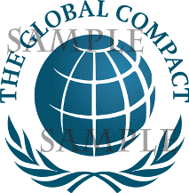
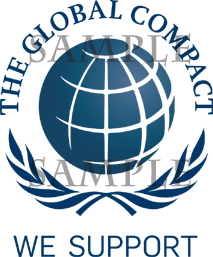

Home / About the Global Compact / Global Compact Logo / Global Compact Logo Policy
The Global Compact name and logo are the property of the United Nations Global Compact Office, are registered with the World Intellectual Property Organization, and are protected worldwide under Article 6 ter of the Paris Convention for the Protection of Industrial Property. The following guidelines govern the use of the Global Compact name and logo by Local Networks [1], Partners [2], Participants [3] and other Stakeholders [4] of the Global Compact initiative. The UN Global Compact Office reserves the right to take appropriate action in the event of a breach of this policy. Possible actions may include, but are not limited to, removing the participant’s name from the list of participants, revoking participant status, and/or instituting legal proceedings with the appropriate authorities. Any suspected misuse of the Global Compact name or logo in the context of the Global Compact should be referred to gclogo@un.org

The UN Global Compact Office grants Participants and other Stakeholders a limited right to use its logo (“the Global Compact logo”), which is displayed above. The Global Compact Office’s general policy is to permit its participants and other stakeholders to use the Global Compact logo only in the context of their activities promoting the Global Compact and its goals, but not in any manner that suggests or implies that the Global Compact Office has endorsed or approved of the activities, products, and/or services of the organization, or that the Global Compact Office is the source of any such activities, products, and/or services. In most circumstances, the Global Compact Office suggests that participants and other stakeholders use the “We Support the Global Compact” logo (see below) rather than the Global Compact logo.
For all proposed uses of the Global Compact logo, the permission of the Global Compact Office must be sought in advance from the UN Global Compact Office Please provide us a sample of your document via the online logo request and indicate where on the sample document you would like the logo to appear. Specifically, please note that the following uses will not be permitted:

Participants in the Global Compact and other Stakeholders are encouraged to advocate widely and express their support for the Global Compact and its principles. For such activities, the Global Compact Office may authorize Participants and other Stakeholders to use the modified “We Support the Global Compact” logo (hereinafter the “Modified Logo”). Please note that the following conditions apply for the use of the Modified Logo:
In accordance with this policy, the following uses of the Modified Logo will generally be permitted:
However, for all proposed uses, including those referred to above, permission to use the Global Compact logo must be sought in advance from the UN Global Compact Office. Please provide us a sample of your document via the online logo request system and indicate where on the sample document you would like the logo to appear. Please note that the following uses will not be permitted:
To facilitate participants' use of the Modified logo in their Communications on Progress as well as help stakeholders to identify a COP, a special contextualized version of the Modified logo has been introduced. It may be downloaded and used within a participant's COP without prior permission of the UN Global Compact Office. Use of this logo is optional. This logo can be downloaded by clicking on the image below. Permission is still required for all other uses of the Global Compact logos, including in the context of a participant's COP.
The terms and conditions under which Partners of the Global Compact Office and Local Networks may use the Global Compact name and logo will normally be set out in documentation or agreements establishing or memorializing the relationship. In all other cases, where there is no agreement, the policies set forth herein will apply. A logo template has been created for Local Networks and will be adapted on demand. This logo can only be used by the official representatives of the Local Network concerned in the context of its official activities. >> Guidance for Local Networks on the use of the Global Compact logos (pdf)
Maintaining consistency in the display of the Global Compact name and logo by the Global Compact and its Local Networks, Partners, Participants and other Stakeholders is an important aspect of the strategy to advocate the principles of the Global Compact. Accordingly, when participants, stakeholders, and local networks incorporate the Global compact name and logos in their materials for the permitted uses outlined above, they are asked to strictly adhere to the following guidelines regarding the reproduction and display of the Global Compact name and logos. For more guidance please have a look at the Global Compact Design Manual (pdf).
The use of the United Nations name and emblem and any abbreviation thereof, is reserved for
official purposes of the Organization in accordance with General Assembly resolution 92(I) of 7
December 1946. That resolution expressly prohibits the use of the United Nations name and emblem
for commercial purposes or in any other way without the prior authorization of the
Secretary-General, and recommends that Member States take the necessary measures to prevent the
unauthorized use thereof. The United Nations emblem may be authorized for use by non-UN entities in
exceptional circumstances, such as for illustrative and educational purposes. All use of the UN
emblem by non-UN entities requires the prior written authorization of the Secretary-General of the
United Nations. Requests for such authorization should be submitted to the Office of Legal Affairs,
United Nations, New York, NY 10017 or Fax: +1-212-963-3155. Any suspected misuse of the United
Nations name and emblem should be referred to the Office of Legal Affairs at the United Nations.